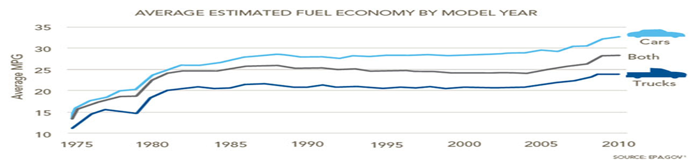

1 / 3

Cars Cars Cars!
2 / 3

3 / 3
Fuel economy plays an important role in co2 footprint, this website displays information about cars fuel economy and co2 foorprint over a time period.
Petroleum products raise environmental red flags even before they are burned. Extracting them from the earth is an energy-intensive process that can damage local ecosystems. Shipping fuels can also consume a lot of energy, and creates an occasional environmental disaster such as an oil spill. As world demand rises, and unconventional fuel sources, such as oil sands, become more economically viable, the ecological impacts of petroleum extraction might also increase dramatically. That’s one more reason why fuel efficiency is so important.
Vehicles are America’s biggest air quality compromisers, producing about one-third of all U.S. air pollution. The smog, carbon monoxide, and other toxins emitted by vehicles are especially troubling because they leave tailpipes at street level, where humans breathe the polluted air directly into their lungs. That can make auto emissions an even more immediate health concern than toxins emitted high in the sky by industrial smokestacks.